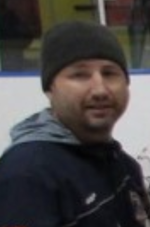

<div>
    <table style="border-style: none;">
        <tr>
            <td>
            </td>
            <td>
                <div style="font-family: Arial; font-size: 18px; color: rgb(54, 96, 146);">
                    <p> Marty has been a proud &quot;CUDA&quot; for over 12 years coaching at every level including in
                        the House
                        League and Rep programs. Marty has over 25 years of coaching experience that includes coaching
                        over 35 teams.</p>

                    <p> Marty was employed by Hockey Canada for 10 years where he served as the General Manager for
                        Hockey Canada’s 5 regional Centres of Excellence.  During his time with Hockey Canada Marty was
                        a member of several National and
                        Provincial committees including Hockey Canada’s Athlete Development, Coaching, Risk, Safety
                        Management and Strategic Planning committees.  Marty also served as a Team Leader for a couple
                        of World Junior Championship Evaluation Camps and was the Team Leader for the 2002 Team Canada
                        Men’s World Championship Team and Chaired the 2004 International Coaches Conference.</p>

                    <p> Marty
                        also traveled throughout Ontario with the Canadian Women’s National Team while at Hockey Canada
                        conducting local player and coach’s clinics with National team players and coaches.</p>

                    <p>Marty’s other hockey experience includes a year as the Video Coordination for the Calgary Flames
                        and a year as an Assistant Coach in the OUA.</p>

                    <p>In 2019 Marty was awarded the Vern Neal Volunteer of the Year Award by the BGHC for his long-term
                        service the Barracuda organization.  Marty also received the 2002 Queen’s Golden Jubilee Medal
                        and in 1999 received a Recognition Award from the Ontario Hockey Federation for Outstanding
                        Contributions in Hockey Development.</p>

                    <p>Marty has been employed as the Commissioner of the Ontario Junior Hockey League since 2009 which
                        is one of the top Junior A development leagues in Canada that moves players on to the CHL, U
                        Sports and NCAA.  During this time Marty has also served as the Vice-Chairman of the Canadian
                        Junior Hockey League.</p>

                    <!-- <a href="" target="_"> </a> -->
                </div>
            </td>
        </tr>

    </table>

</div>